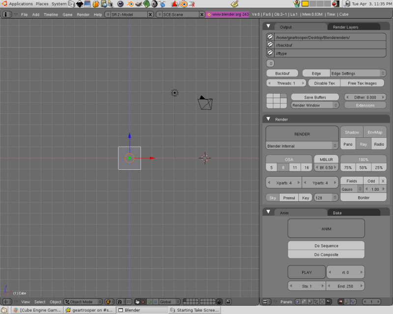
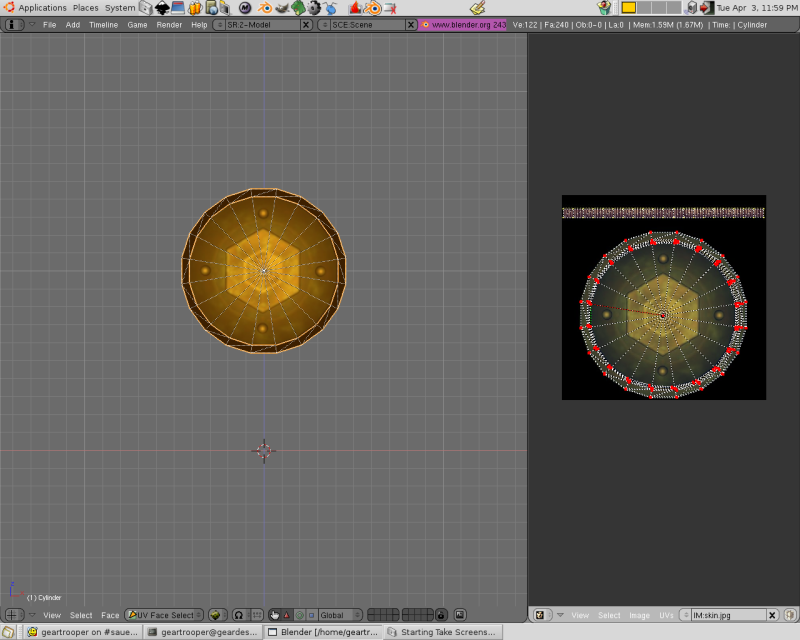
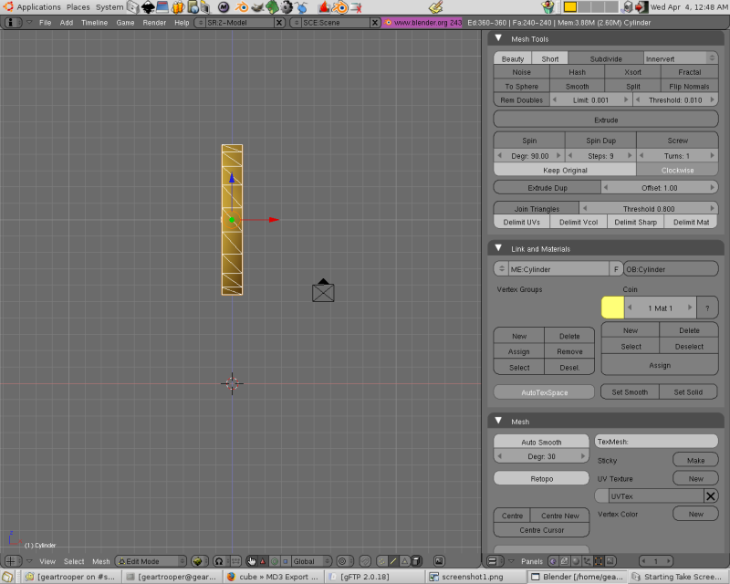

A quick and easy guide for exporting static models from Blender to Sauerbraten.
|
For this tutorial
Blender 2.43 was used with this
md3 exporter script.
Having a uv mapped model we proceed by opening blender.

Your panels' appearance may vary depending on your preference.
Open the file containing your model with F1 or CTRL+O and enter front view with KEYPAD 1.
For this Coin model it will need to float above the ground. You can achieve this in Sauerbraten by editing the md3.cfg after exporting, which we will get to, or set the height in Blender as shown. Using both is best to achieve accuracy. Shown above is the coin model in edit mode with the model's Point of Origin at the crosshairs. For any model, animated or not, the point of origin must be at 0,0,0 for proper exporting. Lets check the uvmap to ensure it is mapped correctly. TAB out of edit mode and press F with the coin selected to enter uv mode. Select the UV/Editor (shown on the right) by selecting it
in the button panel's header (button bar at bottom right).

If you haven't already convert the model from quad faces to tris. F out of uv mode, TAB to edit mode, select all faces with A, and SPACEBAR->EDIT->
CONVERT TO TRIANGLES. This is the proper format for faces in game engines.
One last step remains before we can export. Blender's axis are different than most 3d apps and for Sauerbraten. If we export now the model will face in the wrong direction. Select all vertex with A. Then type Z to rotate on the z axis. Finally determine the exact amount with -90.

Another fact to be aware of is default objects in Blender such as a cube or a cylinder are very small when exported to Sauerbraten. This, too, can be remedied in Blender and/or Sauerbraten via cfg. For a relative scale above is shown the coin model and just to the right is the default camera.
Now you are ready to export. TAB to object mode and with the model selected choose File->Export->Quake3(.Md3). Name the model tris.md3, choose the directory to export to and select Export Quake3 MD3.
If you have read Sauerbraten/docs/dev/md3_sauer_howto.txt (its your sauerbraten md3 bible) you will know static models won't need an md3.cfg. This is fine but lets make one anyway to get a feel for the process. Open up any text editor and save it as md3.cfg. Edit it with the following lines;
md3load tris.md3
this will load the model into sauerbraten. Next we must call the skins and any masks you may have made. Also you will need the name of the mesh to apply the skin to which can be found by selecting the model in Blender and in the buttons window (F9) look for the name in the Links and Materials panel designated in the OB: area. In the coin model's case it is Cylinder (second screenshot, right hand side). The next line will look like so;
md3skin Cylinder ./skin.jpg
Skin.jpg is the name of the texture which was applied to the coin model. Now lets adjust the size and specularity with;
mdlscale 200
mdlspec -1
Save the file and your ready to test. A good practice for testing static md3's is to put the tris.md3, skin.jpg, and md3.cfg in the sauerbraten/packages/models/health slot after moving its contents temporarily. Fire up Sauerbraten and if all went well your model will be in the current map where any health boosts were placed. Next time we will examine exporting animated md3 files.
-geartrooper